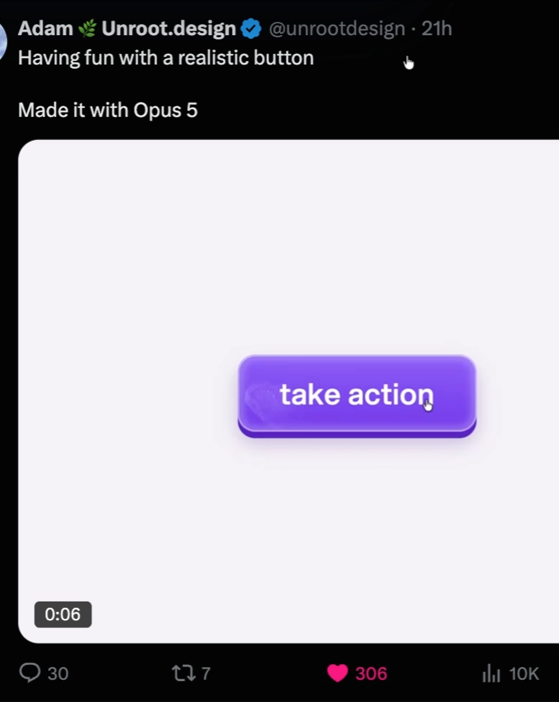
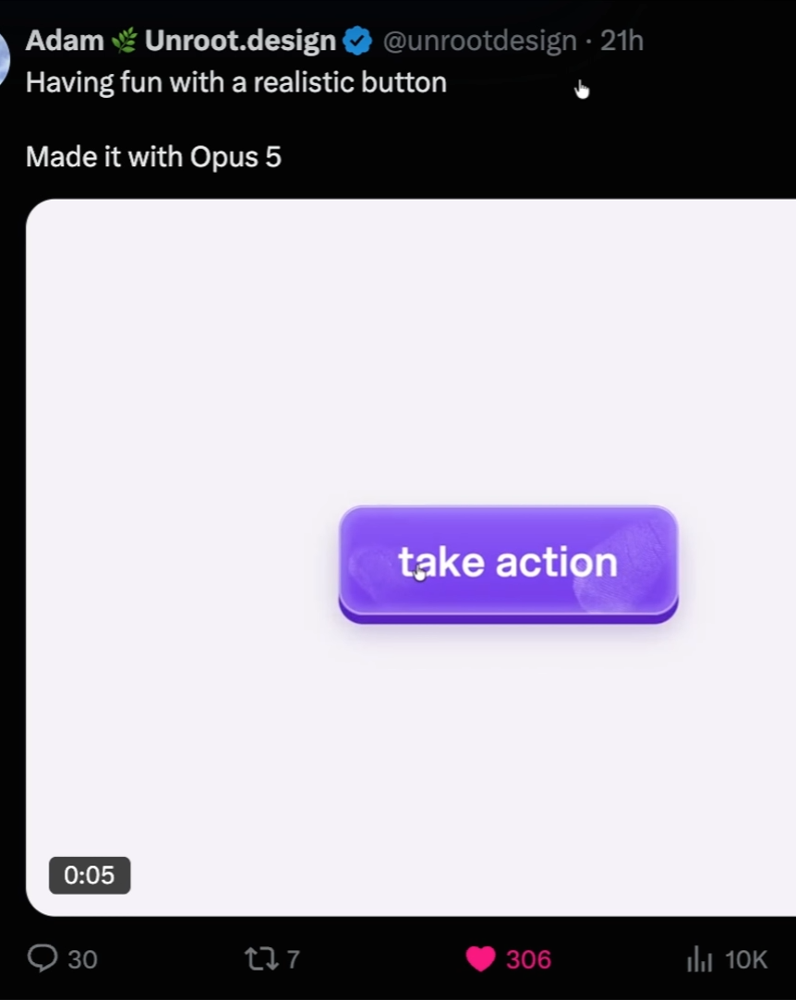
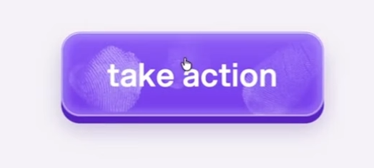
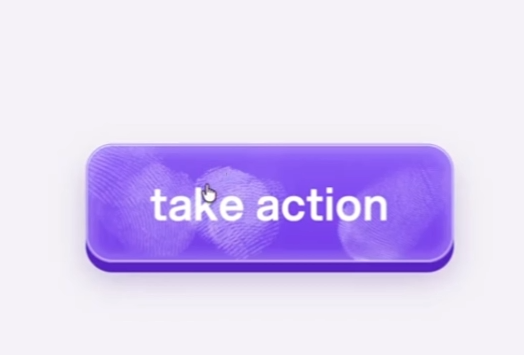

One button.
Six attempts.
How much does reasoning effort change an AI’s ability to recreate motion from a capture?
Six separate runs received the same evidence bundle and a request to rebuild a tactile fingerprint button without visiting its source. Here are the results, including the decisions, detours and checks behind them.
Try the reconstructions- Same input
- 67 evidence images
- Source capture
- 8.53 seconds
- Reasoning levels
- 6 individual runs
- Original video / code supplied
- 0 in the bundle
01 / THE COMMON GROUND
What every run could see.
Seven keyframes, 60 detail images and timing measurements. All six runs received the same capture bundle.
A clean ending does not prove a fade. Fingerprints remain visible in late samples, then the surface is clean at the playback reset. Light, Medium and High introduced fading during replay. Ultra’s evidence review explicitly separated reset from gradual disappearance.
02 / TRY THEM YOURSELF
Same brief. Different feel.
Start both replays to compare the impressions. Switch to Full controls to press the buttons and explore each reconstruction.
Previews start at rest. Play both starts their replays together; their timing and motion remain independent. Reset returns them to rest. Compact crops the surrounding space without resizing individual buttons to match. Use Full controls for direct pressing and keyboard access, or open an original full size.
Try all six
Choose Play all to compare the replays. Full controls lets you press each button and leave fingerprints. Mobile layout · 390 × 844.
Preparing all six demos…
03 / THE WORK BEHIND THE RESULT
What happened in each run.
Elapsed wall time from the initial request to the first completed implementation. Includes tools, retries and waiting. The review you’re reading is excluded.
More time did not mean a better result at every step.
Medium finished fastest. Max took longest. Ultra finished before ExtraHigh and Max, with two subagents working in parallel.
One run per setting. Token counts are reported below; dollar costs are not inferred. No repeated-run average. Light’s label corresponds to the recorded low setting.
RECORDED USAGE
The tokens behind each run.
Counts cover the same first implementation as the elapsed times above. Ultra includes its two subagents.
| Run | Input | Cached input (included) | Output | Reasoning (in output) | Total tokens |
|---|
Total = input + output. Repeated context counts across model requests, so these totals are larger than a single prompt. Cached input is already part of input; reasoning is already part of output. This is usage accounting, not a dollar estimate.
Ultra: main run and subagent breakdown
| Contributor | Input | Cached input | Output | Reasoning | Total |
|---|
The motion evidence subagent’s count includes its initial review and follow-up. Separate session counters are added once; the parent’s recorded counter does not include the subagents’ model calls.
How the counts were verified
The audit takes the difference between cumulative usage counters at each selected turn’s start and completion. Repeated counter snapshots are ignored. Light’s later “You finished?” exchange, inherited ancestor turn markers in forked logs, and this study’s own work are excluded.
Every nonduplicate counter increment was checked against that session’s latest usage record. All nine included turns satisfy input + output = total, and all three subagent turns fall within Ultra’s first run.
Field definitions follow the official OpenAI documentation for prompt caching and reasoning token usage. Only numeric usage metadata is published.
04 / WHAT I TAKE FROM THIS
Reading the evidence matters.
An editorial assessment of these six artifacts and their recorded actions. Visual judgments are qualitative; this is not a pixel-error or motion-fidelity benchmark.
Ultra made the strongest case for its choices.
Its extra work resolved meaningful ambiguities: persistent prints versus fading, missed press intervals, and a hold that incorrectly spanned released states. It also followed through with browser checks.
My preferred reconstruction workflow in this set, with the caveat that two subagents contributed.
ExtraHigh is a useful comparison point.
It offers a close desktop silhouette and a compact, practical inspection interface. The browser catches real problems and those problems get fixed. That makes the result easier to trust than a syntax-only success.
A strong single-worker result here; not evidence that this setting always offers the best value.
The lower efforts already recover the idea.
Even the short runs identify the purple button, compression and fingerprint effect. Their weak point is deciding what the evidence does and does not establish, followed by checking the actual render.
A faster draft can be useful, but an invented fade changes the interaction’s meaning.
The shared gap: variation between impressions.
Our visual assessment: none of the six fully captures the reference’s changing impression size, coverage and strength. Each recreates a recognizable fingerprint, but the contacts still feel more uniform than the reference.
The bundle does contain evidence of variation. The frames below show faint patches, fuller impressions and overlapping contacts with different apparent strength. These differences are visible in the reference sequence the models received.

A faint, limited patch on the left.

A broader, lighter impression is visible on the right.

The left impression is now fuller and stronger.

Overlapping contacts have uneven coverage and strength.
Capture timestamps · displayed at the same scale using unchanged reference pixels. Open any image for the uncropped reference.
What the frames cannot establish: a faint patch can appear smaller without the underlying stamp changing size. Reveal, overlap, clipping and button compression can also change its visible extent. The bundle’s stills do not prove random resizing, pressure-sensitive input or an exact opacity value.
Some variation was already implemented
Code inspection found the following rules. Our assessment concerns how convincingly they reproduce the reference’s varied contacts. It remains qualitative, with no scored fidelity test.
| Run | Implemented variation |
|---|---|
| Light | Fixed stencil scale; opacity changes with print age. |
| Medium | Fixed stamp footprint; opacity changes as a print appears and fades. |
| High | Fixed nominal footprint; a small reveal-scale change and per-event opacity. |
| ExtraHigh | Per-press strength and a shared growth effect as each stamp appears. |
| Max | Per-press strength and three repeating size factors: 0.93, 0.985 and 1.04. |
| Ultra | Per-press strength and rotation; the same nominal stamp footprint. |
| Run | Pause | Scrub | Speed | Clear | Fingerprint behavior |
|---|
All six include replay and direct pressing. Extra controls are additions made by the reconstructions; they are not evidence that those controls existed in the original design.
05 / PROVENANCE & LIMITS
Were the reconstructions blind?
The recorded actions are consistent with all six working from the bundle, without visiting the original source or reading another run’s output.
What was checked
Public task messages, command executions, file and image reads, browser navigation and tool actions. Ultra’s two subagents were included. Local preview URLs point to each run’s own output.
The source’s name and URL are visible inside the supplied bundle. “Blind” here means no original-post, original-video or original-code access during reconstruction—not an absence of source imagery.
This is an action-log audit, not a packet capture or proof about hidden activity. Private reasoning, system instructions and raw local paths are not published.
Why this is a case study
- One attempt at each effort setting, with no randomized repetitions.
- Light received a browser reminder during its run; the others received it in the initial prompt.
- Browser restrictions and server retries affected both time and verification.
- Ultra used two parallel subagents.
- The original video and implementation were unavailable in the bundle, so exact continuous motion cannot be certified.
Audit notes and artifact integrity
All six original HTML files were copied byte for byte from their final outputs. Embedded previews add a study playback adapter that starts them at rest and operates their existing controls. Full-size and download links open the unchanged originals. SHA-256 hashes, recorded effort settings, timings and public progress excerpts are included in the study data.
Download the study data (JSON) ↓
Reference images and motion measurements come from the supplied capture bundle. Elapsed times, token counts and process notes come from the recorded model runs. The interface assessments and review screenshots were made afterward for this study.
Shared input SHA-256